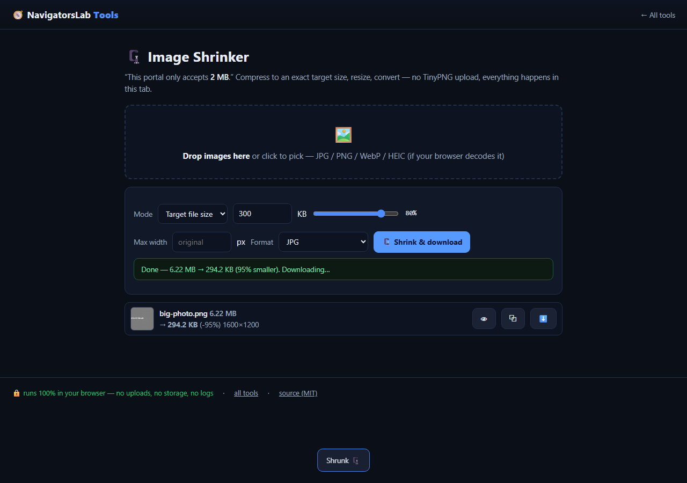

Image Shrinker
Hit “max 2 MB” portal limits without TinyPNG
🆓 free & open source (MIT)🔒 nothing is uploaded📶 works offline📱 mobile friendly
🔊 Narrated Step-by-Step Usage Tutorial Video (36s)
📖 Detailed Step-by-Step User Guide
Step 1: Drop One or More Large Images · [Batch Dropzone (#dz)]Drop one or more large images (for example, a 16 MB camera photo or high-DPI scan) onto `#dz`, or click to select a batch from your computer.✓ Result: Each image's original dimensions and byte size are listed.
Step 2: Pick Output Format & Enter Target Kilobyte Cap · [Format (#fmt) & Target Size (#targetKB)]Select your output format (`JPEG`, `WebP`, or `AVIF`) in `#fmt` and type your maximum allowed file size in kilobytes into `#targetKB` (e.g., `300` for a 300 KB portal limit, or `1024` for 1 MB).✓ Result: Target byte ceiling and encoder format are locked in (also deep-linkable via `?format=webp&targetKB=300`).
Step 3: Click Shrink & Download to Binary-Search Quality · [Shrink Button (#go)]Click **Shrink & download (`#go`)**. The engine binary-searches Canvas encoder quality (and gently steps down dimensions only if required) until the encoded output lands at or below your target KB.✓ Result: Highest possible visual quality that fits strictly beneath your byte cap.
Step 4: Save Individual Images or a Batch ZIP · [Output List (#list) & ZIP Download]Check the percentage reduction and exact final kilobyte count on each row in `#list`, then save individual files or click **Download all as .zip**.✓ Result: Every output file is guaranteed to pass strict upload size limits on the first try.
🎛️ UI Controls & Shortcuts Reference
Target KB (`#targetKB`)— Exact maximum file size in kilobytes (e.g., `200`, `300`, `500`, `2000`).Output Format (`#fmt`)— Choose `image/jpeg` (universal compatibility), `image/webp` (smaller at same quality), or `image/avif`.Max Dimension Cap (`#maxDim`)— Optional maximum width/height in pixels before quality binary search begins.URL Deep-Link Params— Pre-fill settings via `?format=webp&targetKB=300`.
💡 Pro Tips & Real-World Workflows
- For visa, passport, and government portals that require JPEG under 240 KB or 300 KB, select `JPEG` and set Target KB to `235` or `295` for a safety margin.
- For web publishing and blog hero images, choose `WebP` with a `150` KB target to cut page weight by 85–95% without visible blur.
- Batch-drop 20+ product photos at once—Image Shrinker processes them sequentially in your tab and exports one `.zip`.
⚡ Concrete Example: Input → Engine → Output
1 · Raw Input
passport-scan.png (16.0 MB, 4000×3000)
Government / Visa portal rejects upload: 'Maximum attachment size is 300 KB'
2 · On-Device Engine
8-Step Binary Search over JPEG/WebP/AVIF encoder quality on HTML5 Canvas to land just below target ceiling
Runs locally under strict Content-Security-Policy with zero network uploads.
3 · Verified Output
passport-scan.shrunk.jpg (294 KB)
98.1% reduction (16.0 MB → 294 KB ≤ 300 KB target) · Crisp legibility preserved · Batch ZIP ready
Target: <=300 KB | Binary Search: q=0.50 -> q=0.72 -> q=0.68 | Output: 294,112 bytes [OK]

Image Shrinker mid-task — this demo runs entirely on this page's own GitHub Pages site.
What it does
- Hit an exact size target (e.g. "under 300 KB") with smart binary-searched quality
- JPEG, WebP and AVIF output; batch processing with ZIP download
- Live preview and per-file progress that survives unreadable images
How it works
- Step 1. Drop a batch of images
- Step 2. Type the target: "under 300 KB"
- Step 3. Download the results as one ZIP
Private by design. Files are processed on your device and never
sent to any server. No accounts, no tracking, no cookies, nothing retained. Prefer the hub?
The same tool lives at https://navigatorslab.com/tools/shrink.html.
The suite: 24 projects, one zero-upload promise
🛡 Photo Privacy KitStrip GPS, camera model and timestamps before posting
🔐 Password Breach CheckerHas this password been breached? — it never leaves your tab
🔍 Metadata & Hidden-Data CheckerSee what's really inside a file — then strip it
📄 Scan & Screenshot CleanerPhone photos of documents → clean, straight PDFs
✍ Local E-Sign PadSign this lease tonight — not DocuSign
🧾 Receipts → One PDFShoebox of receipt photos → one date-sorted PDF
🔢 Receipt OCR → CSVRead totals off receipt photos, export for expenses
🔳 QR StudioGenerate QR codes and decode QR images — no site sees them
🎧 Audio TrimmerCut voice notes and clips on a waveform
🧮 Invoice / Quote GeneratorOne-person shops: hours in, clean PDF out
🗂 Batch Rename & SortIMG_5847.jpg → 2026-09-05-receipt-home-depot.jpg
🖨 Print-Shop PrepExact sizes, bleed, DPI checks, print-ready PDF
📑 PDF PagesReorder, rotate, delete and extract PDF pages
🔬 Text DiffCompare two texts with word-level highlights
🎨 ReimagineRedesign any HTML page from its own content
📊 Text StatsWords, reading time, readability, keyword density
📜 PDF StudioEdit the text inside your PDF — private, free, open source
🩺 Design Health18 deterministic design-quality checks for HTML — no LLM, no API key
🔪 Skill SliceCopy one Read-verified skill folder — a slice, not the pie
🕵 liecatchersYour agent said Done. Prove it — ten sensors, one RECEIPT.json
📚 Book Guide MCPShip improvements with your books — agents cite, run playbooks, learn
📡 Data InsightsFounder intelligence — daily & weekly tech signal briefs
🪓 Iron Axe: LegacyAn original side-scrolling beat 'em up — Godot 4